Gráfico de puntos de Wilkinson con ggplot2
Dotplots con geom_dotplot() — Tutorial
guiado con actividades
Raymond L. Tremblay Lalande
2026-02-11
Fecha de la ultima revisión
## Fecha de la última revisión: 2026-02-11Gráficos de Puntos con geom_dotplot
Los paquetes a instalar
#(Opcional) Instalar paquetes si faltan:
pkgs <- c("ggversa", "ggplot2", "tidyverse", "gt", "gridExtra", "janitor")
to_install <- setdiff(pkgs, rownames(installed.packages()))
if (length(to_install)) install.packages(to_install, dependencies = TRUE)
library(ggversa) # la función "library" activa el paquete de **ggversa** donde se encuentra los archivos de datos
library(ggplot2) # ggplot2 es la librería que se usará para visualizar los datos
library(tidyverse) # una serie de paquetes para organizar y visualizar los datos
library(gt) # Un paquete para que las tablas se vean más organizada.
library(gridExtra) # Un paquete para organizar las figuras de ggplot2
library(janitor) # un paquete para limpiar los nombres
citation("janitor")## To cite package 'janitor' in publications use:
##
## Firke S (2024). _janitor: Simple Tools for Examining and Cleaning
## Dirty Data_. doi:10.32614/CRAN.package.janitor
## <https://doi.org/10.32614/CRAN.package.janitor>, R package version
## 2.2.1, <https://CRAN.R-project.org/package=janitor>.
##
## A BibTeX entry for LaTeX users is
##
## @Manual{,
## title = {janitor: Simple Tools for Examining and Cleaning Dirty Data},
## author = {Sam Firke},
## year = {2024},
## note = {R package version 2.2.1},
## url = {https://CRAN.R-project.org/package=janitor},
## doi = {10.32614/CRAN.package.janitor},
## }▶ Introducción
Los gráficos de puntos tipo Wilkinson dotplot permiten visualizar la distribución de una variable continua mostrando el apilamiento de observaciones en compartimentos ordenados. A diferencia de los histogramas tradicionales, cada punto representa una observación individual y permite identificar empates, densidades locales y patrones finos de dispersión. Este tutorial demuestra cómo utilizar geom_dotplot() para controlar el color, la dirección del apilamiento, el tamaño de los puntos, el ancho de los compartimentos y cómo manejar agrupaciones y datos faltantes.
Dipodium
El genero Dipodium incluye aproximadamente 44 especies distribuida por el sur-este de Asia, Nueva Guinea, islas en el Pacifico y Australia. Muchas de la especies de Dipodium son micoheterotrofica. Los datos representa características morfológicas y reproductiva de dos especies de Dipodium, Dipodium pardalinum y Dipodium roseum. Estos datos son de dos plantas terrestre sin clorofila. Las plantas tiene solamente una inflorescencia (no tiene hoja) que sale de la tierra. La hipótesis es que la orquídea adquiere sus nutrientes de hongos (micorriza) en el suelo, y que estas micorriza están recibiendo sus nutrientes de la raíces de los árboles de Eucalyptis.
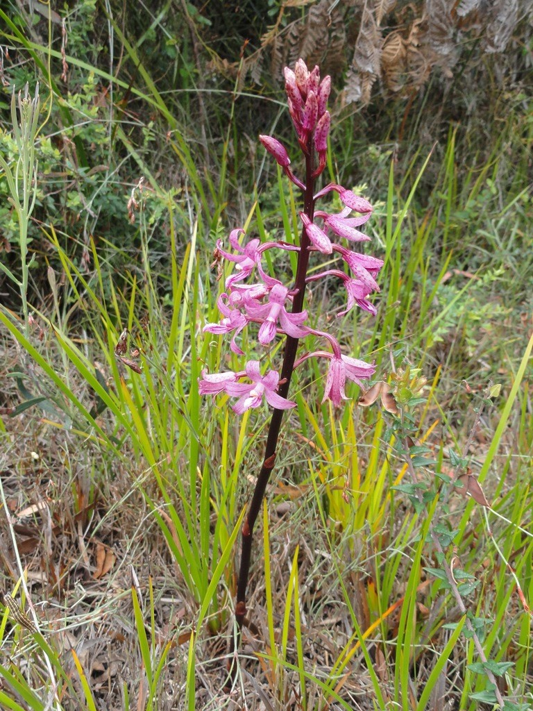
dipodium=clean_names(dipodium) # Esta función limpia los nombres de las variables
head(ggversa::dipodium, n=2)## # A tibble: 2 × 21
## `Tree Number` `Tree species` DBH `Plant number` `Ramet number` Distance
## <int> <chr> <dbl> <int> <int> <dbl>
## 1 1 E.o 75 1 1 2.47
## 2 1 E.o 76 2 1 1.97
## # ℹ 15 more variables: Orientation <dbl>, Number_of_Flowers <int>,
## # Height_Inflo <int>, Herbivory <chr>, RowPosition_NF <int>,
## # Number_Flowers_position <int>, Number_of_fruits <int>, Perc_FR_set <dbl>,
## # pardalinum_or_roseum <chr>, Fruit_position_effect <int>,
## # Frutos_si_o_no <int>, P_or_R_Infl_Lenght <chr>, `Num of fruits` <int>,
## # Species_Name <chr>, `Cardinal orientation` <int>gt(head(dipodium)) # la función *head* es para visualizar las primeros 6 filas, es una manera alterna de ver los datos| tree_number | tree_species | dbh | plant_number | ramet_number | distance | orientation | number_of_flowers | height_inflo | herbivory | row_position_nf | number_flowers_position | number_of_fruits | perc_fr_set | pardalinum_or_roseum | fruit_position_effect | frutos_si_o_no | p_or_r_infl_lenght | num_of_fruits | species_name | cardinal_orientation |
|---|---|---|---|---|---|---|---|---|---|---|---|---|---|---|---|---|---|---|---|---|
| 1 | E.o | 75 | 1 | 1 | 2.47 | 40 | 11 | 35 | n | 1 | 24 | 0 | 0.00 | r | 1 | 0 | r | 0 | r | 1 |
| 1 | E.o | 76 | 2 | 1 | 1.97 | 50 | 19 | 47 | n | 2 | 23 | 0 | 0.00 | r | 2 | 0 | r | 0 | r | 2 |
| 2 | E.o | 76 | 3 | 1 | 1.95 | 350 | 18 | 63 | n | 3 | 25 | 1 | 0.04 | r | 3 | 0 | r | 1 | r | 8 |
| 3 | E.o | 58 | 4 | 1 | 3.24 | 210 | 24 | 47 | n | 4 | 20 | 5 | 0.25 | r | 4 | 0 | r | 5 | r | 5 |
| 4 | E.o | NA | 5 | 1 | 0.85 | 80 | 25 | 61 | n | 5 | 13 | 0 | 0.00 | r | 5 | 0 | r | 0 | r | 2 |
| 5 | E.o | 59 | 6 | 1 | 2.62 | 160 | 17 | 35 | n | 6 | 25 | 2 | 0.08 | p | 6 | 0 | r | 2 | p | 4 |
▶ Dotplot básico
Este primer gráfico muestra el comportamiento general de la variable number_of_fruits. Es importante recordar que el eje Y en geom_dotplot() NO representa frecuencia, sino el apilamiento de puntos. Esto significa que la altura visual no tiene interpretación directa en escala numérica, por lo que en la mayoría de los casos conviene ocultarlo.
## [1] "tree_number" "tree_species"
## [3] "dbh" "plant_number"
## [5] "ramet_number" "distance"
## [7] "orientation" "number_of_flowers"
## [9] "height_inflo" "herbivory"
## [11] "row_position_nf" "number_flowers_position"
## [13] "number_of_fruits" "perc_fr_set"
## [15] "pardalinum_or_roseum" "fruit_position_effect"
## [17] "frutos_si_o_no" "p_or_r_infl_lenght"
## [19] "num_of_fruits" "species_name"
## [21] "cardinal_orientation"p_basico <- ggplot(dipodium, aes(number_of_fruits)) +
geom_dotplot(fill = "yellow", colour = "red", stackratio = 0.9) +
labs(x = "Número de frutos", y = "Cantidad / apilamiento (no frecuencia)") +
theme(axis.title = element_text(size = 14, face = "bold"))
p_basico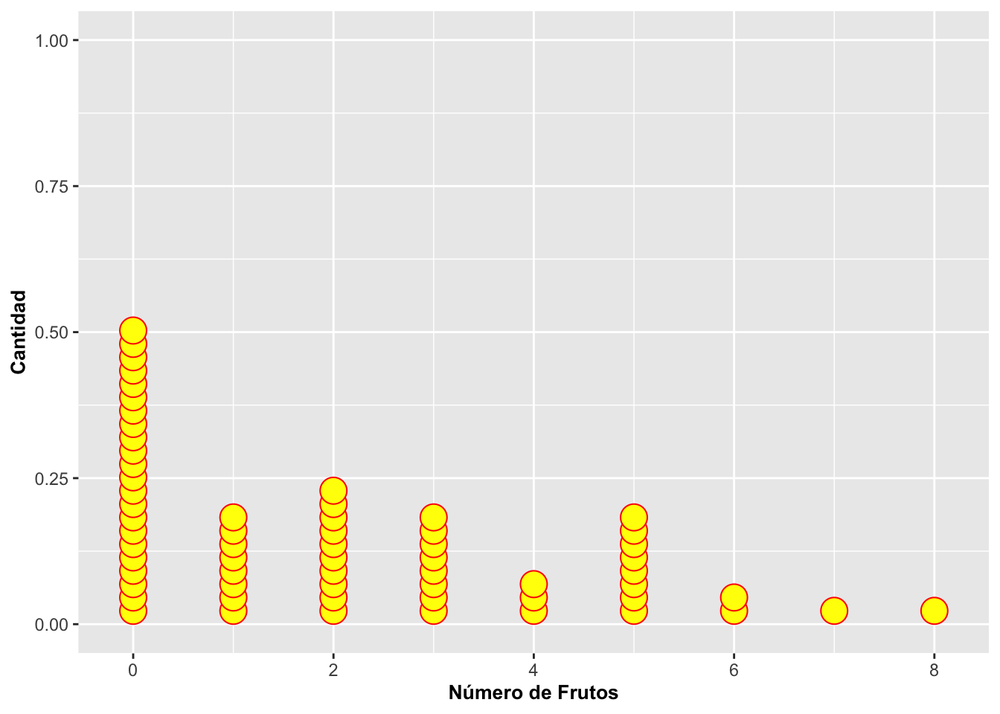
▶ Cómo ocultar el eje Y
geom_dotplot() genera el eje Y automáticamente, aunque no tiene significado numérico. Se puede remover:
- Solución 1: Por tema, ocultando texto y marcas. -Solución 2: Por escala, eliminando completamente la guía.
Ambos métodos son equivalentes; la elección depende del nivel de control deseado sobre el formato final.
Solución 1
p_y_tema <- ggplot(dipodium, aes(number_of_fruits)) +
geom_dotplot(fill = "yellow", colour = "red", stackratio = 0.5) +
theme(axis.text.y = element_blank(),
axis.ticks.y = element_blank(),
axis.title.y = element_blank()) +
labs(x = "Número de frutos")
p_y_tema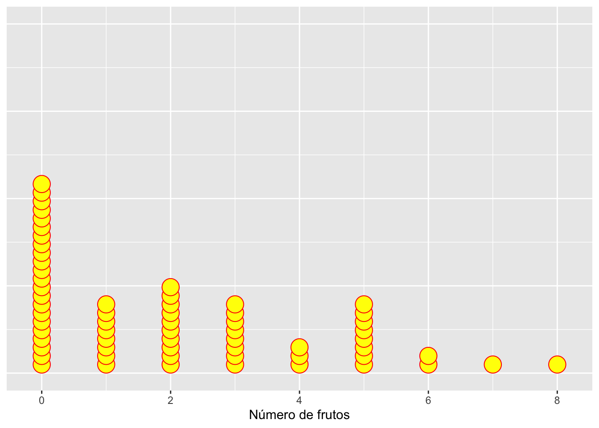
Solución 2
LA información eje de “Y” no representa la frecuencia de los datos, aquí esta una solución
p_y_escala <- ggplot(dipodium, aes(number_of_fruits)) +
geom_dotplot(fill = "blue", colour = "red", stackratio = 0.7) +
scale_y_continuous(NULL, breaks = NULL) +
labs(x = "Número de frutos")
print(p_y_escala)## Warning: Removed 1300 rows containing missing values or values outside the scale range
## (`stat_bindot()`).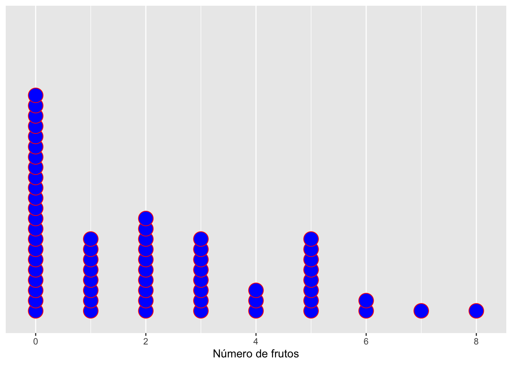
▶ Dirección del apilamiento (stackdir)
El parámetro stackdir controla cómo se apilan los puntos alrededor del eje. Opciones:
- “up”: apilar hacia arriba
- “down”: apilar hacia abajo
- “center”: apilar alrededor del eje
- “centerwhole”: igual que center, pero con alineación más rígida
La elección afecta la lectura visual, especialmente cuando hay valores repetidos.
# 7) DIRECCIÓN DEL APILAMIENTO: stackdir
pa <- ggplot(dipodium, aes(number_of_fruits)) +
geom_dotplot(fill = "red", colour = "black",
stackdir = "center", stackratio = 0.5) +
scale_y_continuous(NULL, breaks = NULL) +
labs(x = "Número de frutos", y = NULL)
pb <- ggplot(dipodium, aes(number_of_fruits)) +
geom_dotplot(fill = "blue", colour = "black",
stackdir = "centerwhole", stackratio = 0.5) +
scale_y_continuous(NULL, breaks = NULL) +
labs(x = "Número de frutos", y = NULL)
pc <- ggplot(dipodium, aes(number_of_fruits)) +
geom_dotplot(fill = "orange", colour = "black",
stackdir = "up", stackratio = 0.5) +
scale_y_continuous(NULL, breaks = NULL) +
labs(x = "Número de frutos", y = NULL)
pd <- ggplot(dipodium, aes(number_of_fruits)) +
geom_dotplot(fill = "black", colour = "white",
stackdir = "down", stackratio = 0.5) +
scale_y_continuous(NULL, breaks = NULL) +
labs(x = "Número de frutos", y = NULL)
pa## Warning: Removed 1300 rows containing missing values or values outside the scale range
## (`stat_bindot()`).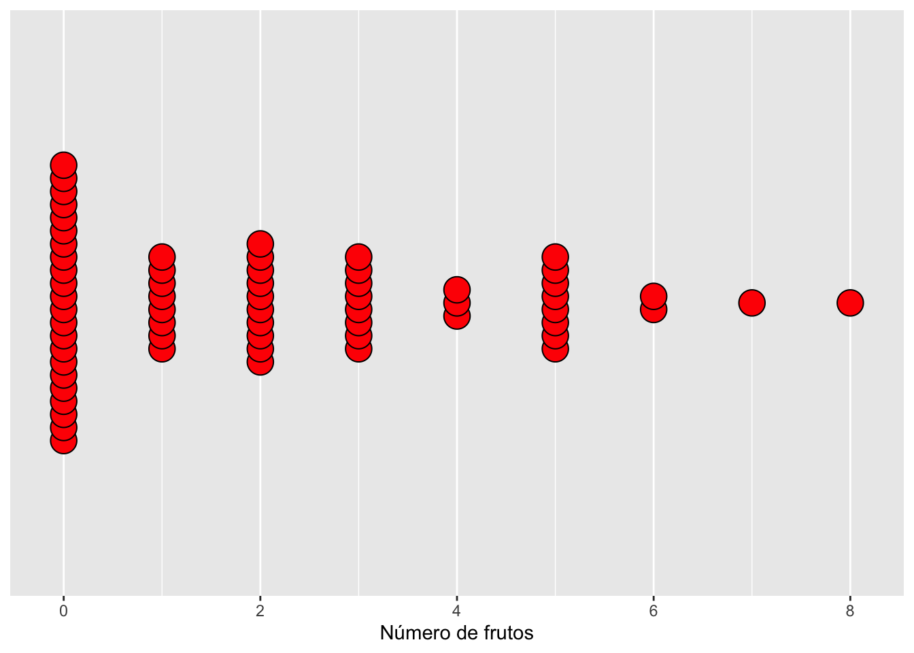
## Warning: Removed 1300 rows containing missing values or values outside the scale range
## (`stat_bindot()`).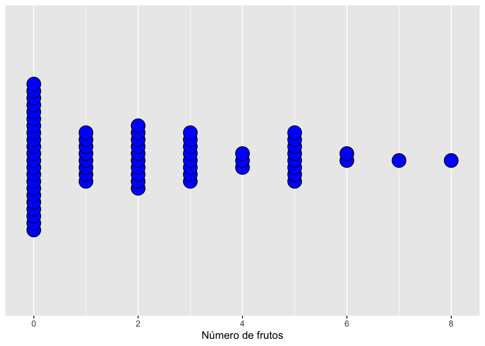
## Warning: Removed 1300 rows containing missing values or values outside the scale range
## (`stat_bindot()`).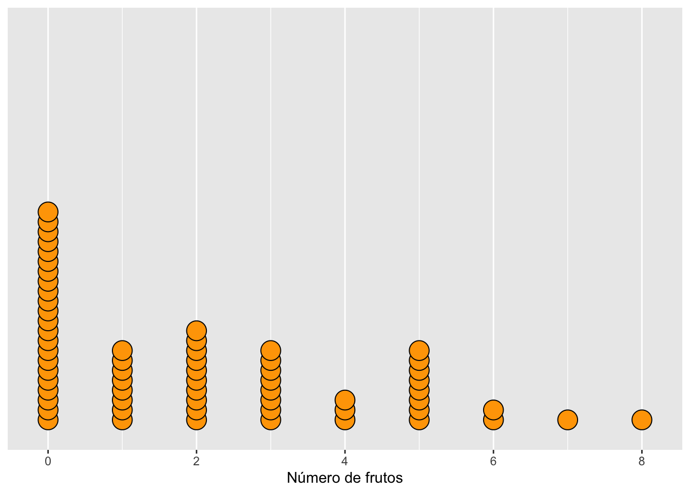
## Warning: Removed 1300 rows containing missing values or values outside the scale range
## (`stat_bindot()`).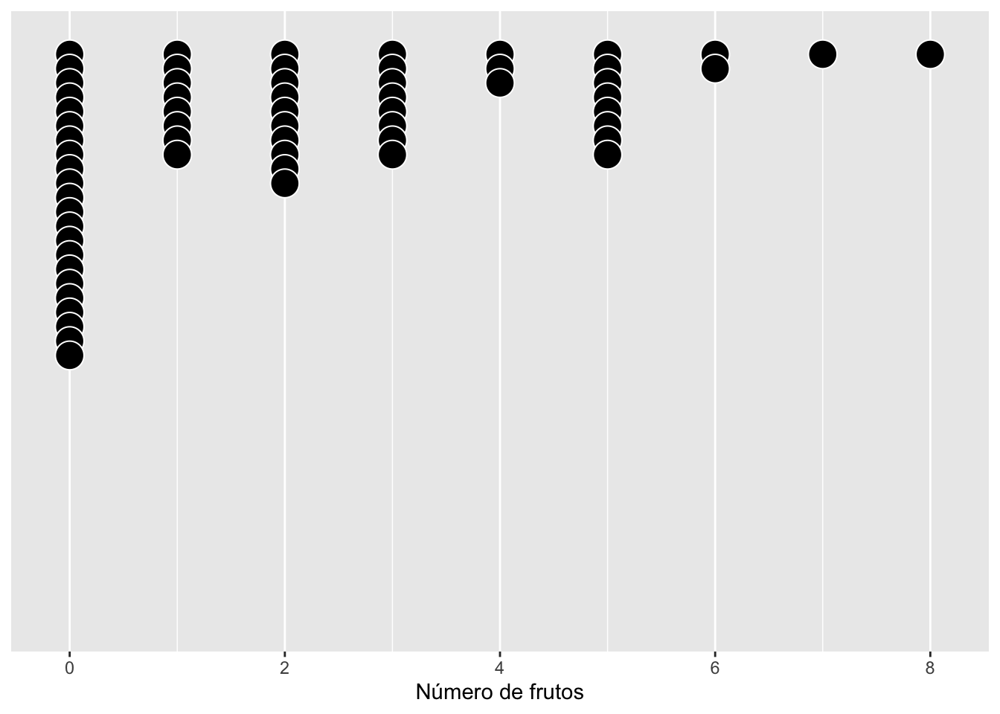

▶ Control estético: tamaño, transparencia y separación
Los parámetros clave para dar estilo al dotplot son:
dotsize→ tamaño del punto relativo al binwidthalpha→ transparencia (0 = transparente, 1 = sólido)stackratio→ separación entre puntos (valores pequeños = puntos más cercanos)
Combinarlos correctamente ayuda a visualizar estructuras densas sin saturar la imagen.
# 8) ESTÉTICA: dotsize, alpha, stackratio
g1 <- ggplot(dipodium, aes(number_of_fruits)) +
geom_dotplot(fill = "blue", colour = "black",
dotsize = 4, stackdir = "center",
stackratio = 0.2, alpha = 0.1) +
scale_y_continuous(NULL, breaks = NULL) +
labs(x = "Número de frutos")
g2 <- ggplot(dipodium, aes(number_of_fruits)) +
geom_dotplot(fill = "blue", colour = "black",
dotsize = 1, stackdir = "center",
stackratio = 0.7, alpha = 0.9) +
scale_y_continuous(NULL, breaks = NULL) +
labs(x = "Número de frutos")
suppressWarnings(gridExtra::grid.arrange(g1, g2, ncol = 2))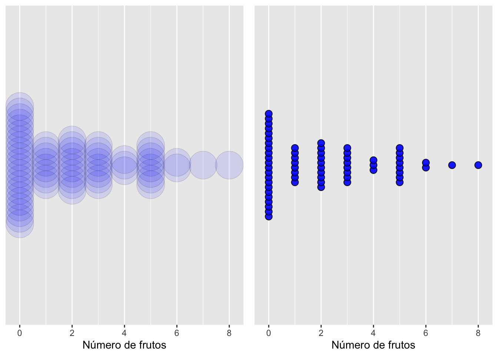
Organizando los gráficos en filas o en columnas


▶ Separación de grupos con
position_dodge()
Cuando se grafica por grupos (por ejemplo, especies), los puntos
pueden solaparse.
position = "dodge" o
position_dodge(width = ...) permiten separar los grupos de
forma horizontal, manteniendo la comparabilidad entre ellos.
Un número mayor en width separa más los grupos; un
número menor aumenta el solapamiento.
La opción de stackratio es para especificar el grado de solapamiento de los puntos uno sobre el otro, o el espacio que separa cada punto. A la figura anteriormente, ahora se le añade un solapamiento diferente. Además, para que los puntos no se solapen unos con otros se usa la función position=dodge. Si quiere modificar el solapamiento tiene que usar position=position_dodge(width = 0.1) para identificar la cantidad de solapamiento de los grupos, más pequeño el número más solapamiento entre los grupos
# 9) SEPARACIÓN ENTRE GRUPOS: position_dodge + stackratio
p_dodge1 <- ggplot(dipodium, aes(number_of_fruits, fill = species_name)) +
geom_dotplot(binwidth = 0.5, stackratio = 0.7, position = "dodge") +
scale_y_continuous(NULL, breaks = NULL) +
labs(x = "Número de frutos", y = NULL) +
theme(legend.position = "none")
p_dodge2 <- ggplot(dipodium, aes(number_of_fruits, fill = species_name)) +
geom_dotplot(binwidth = 0.3, stackratio = 0.7,
position = position_dodge(width = 0.7)) +
scale_y_continuous(NULL, breaks = NULL) +
labs(x = "Número de frutos", y = NULL) +
theme(legend.position = "none")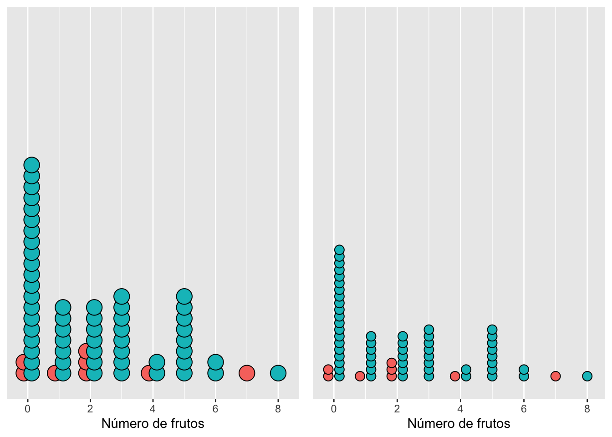
▶ Apilamiento por grupo (stackgroups)
stackgroups = TRUE organiza el apilamiento respetando el
grupo al que pertenece cada observación.
Es útil cuando se desea que la estructura de densidad refleje diferencias entre categorías sin mezclarlas.
Ahora veremos cómo ubicar los puntos uno encima de los otros o sea apilar los puntos pero que a la misma vez la cantidad de puntos cambie de acuerdo al grupo. Continuaremos con el ejemplo anterior de las orquídeas Dipodium. En la Figura se usa la opción stackgroups en combinación con binwidth y method para lograr ese efecto, tal como se muestra a continuación:
p_stackgroups <- ggplot(dipodium, aes(number_of_fruits, fill = species_name)) +
geom_dotplot(stackgroups = TRUE, binwidth = 0.5,
method = "histodot", stackratio = 0.4) +
scale_y_continuous(NULL, breaks = NULL) +
labs(x = "Número de frutos", y = NULL, fill = "Especie")
print(p_stackgroups)## Warning: Removed 1300 rows containing missing values or values outside the scale range
## (`stat_bindot()`).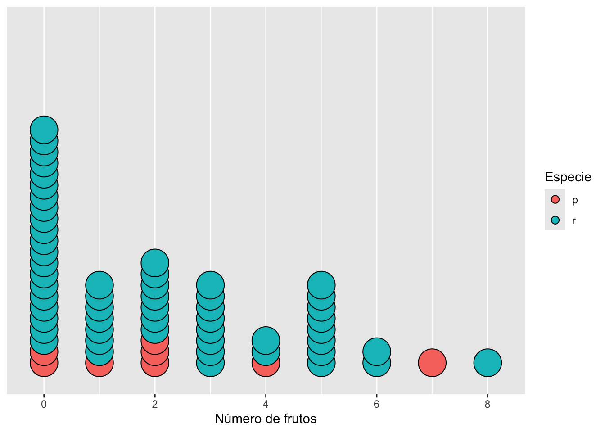
▶ Datos faltantes y uso de
drop_na()
Cuando existe una categoría sin nombre (NA), los dotplots la muestran
como un grupo adicional.
Si no es deseable incluir ese grupo, puede eliminarse con:
Cuando hay un grupo no indentificado típicamente se usa NA en la el archivo para identifica la falta de información. En otros programas estadisctica como SPSS por ejemplo se usa el 999. En este archivo se identificó dos especie de orquídea, Dipodium roseum y Dipodium pardalinum y hubo ocasiones que no se podia asignar la información una especies especifica (ya que se parecen mucho morfologicamente). Entonces, se identificó como NA en el gráfico (la columna de puntos de la derecha). Normalmente uno no va a querer mostrar esos datos al menos que haya una razón para ello. Esos datos se pueden remover utilizando una opción de excluir datos innecesarios del archivo antes de generar el gráfico. Con las funciones en drop_na del paquete tidyr uno puede remover las variables que tienen NA. Se aprovecha y se usa también la opción binaxis para agrupar los datos en el eje de X o el eje de Y; en este ejemplo se agruparon los puntos en el eje de Y como se muestra a continuación, pero centrados los puntos de acuerdo a su especie:
conNA <- dipodium %>%
select(species_name, number_of_fruits) %>%
ggplot(aes(species_name, number_of_fruits, fill = species_name)) +
geom_dotplot(dotsize = 0.5, stackdir = "center", alpha = 0.5, binaxis = "y") +
labs(x = "Especie de orquídea", y = "Número de frutos") +
theme(legend.position = "none") +
scale_y_continuous(NULL, breaks = NULL)
sinNA <- dipodium %>%
select(species_name, number_of_fruits) %>%
drop_na() %>%
ggplot(aes(species_name, number_of_fruits, fill = species_name)) +
geom_dotplot(dotsize = 0.5, stackdir = "center", alpha = 0.9, binaxis = "y") +
labs(x = "Especie de orquídea", y = "Número de frutos") +
theme(legend.position = "none") +
scale_y_continuous(NULL, breaks = NULL)
▶ Control del ancho del compartimento (binwidth)
binwidth controla cuánto representa cada “columna” de
puntos.
En dotdensity:
binwidth= ancho máximo permitidoLa ubicación exacta depende de la densidad de los datos
En histodot:
binwidthdefine distancias fijas, más similar a un histograma clásico
Esto afecta la estructura visual y la interpretación.
El ancho de los compartimentos (o puntos en nuestro caso) es por defecto 1/30 el rango de los datos. Eso se puede cambiar utilizando la opción binwidth (binwidth o sea el ancho del compartimento). Cuando el método (o sea, si se especifica la opción method) para representar los puntos es la densidad de puntos (opción dotdensity), entonces binwidth es el máximo del ancho de compartimiento. Alternativamente, cuando el método se específica como histodot, el binwidth organizará los puntos a una distancia fija de los compartimiento. A continuación, se demuestra la opción por densidad de puntos (así es por omisión) y con un ancho de 2 y de 1 por punto. Para este caso, las categorías están agrupadas por unidades de 2; las plantas con 0 y 1 fruto, con 2 y 3 frutos y así subsiguientemente. Además, se cambió el tamaño de los puntos con dotsize a 0.1.
h1 <- ggplot(dipodium, aes(number_of_fruits)) +
geom_dotplot(binwidth = 2, dotsize = 0.3) + # por defecto method = "dotdensity"
scale_y_continuous(NULL, breaks = NULL) +
labs(x = "Número de frutos", y = NULL)
h2 <- ggplot(dipodium, aes(number_of_fruits)) +
geom_dotplot(binwidth = 1, dotsize = 0.3) +
scale_y_continuous(NULL, breaks = NULL) +
scale_x_continuous(limits = c(0, 8), breaks = 0:8) +
labs(x = "Número de frutos", y = NULL)
▶ Posición de compartimentos: binpositions
La opción: calcula los compartimentos usando todos los datos
combinados, no por grupo.
Esto hace que cada grupo comparta exactamente la misma grilla de referencia, lo cual facilita comparaciones cuando se grafican varias categorías simultáneamente.
p_binpos_all <- ggplot(dipodium, aes(number_of_fruits, fill = species_name)) +
geom_dotplot(stackgroups = TRUE, binwidth = 0.5,
binpositions = "all", dotsize = 0.5) +
scale_y_continuous(NULL, breaks = NULL) +
theme(legend.position = c(0.8, 0.8)) +
labs(x = "Número de frutos", y = NULL, fill = "Especie")
print(p_binpos_all)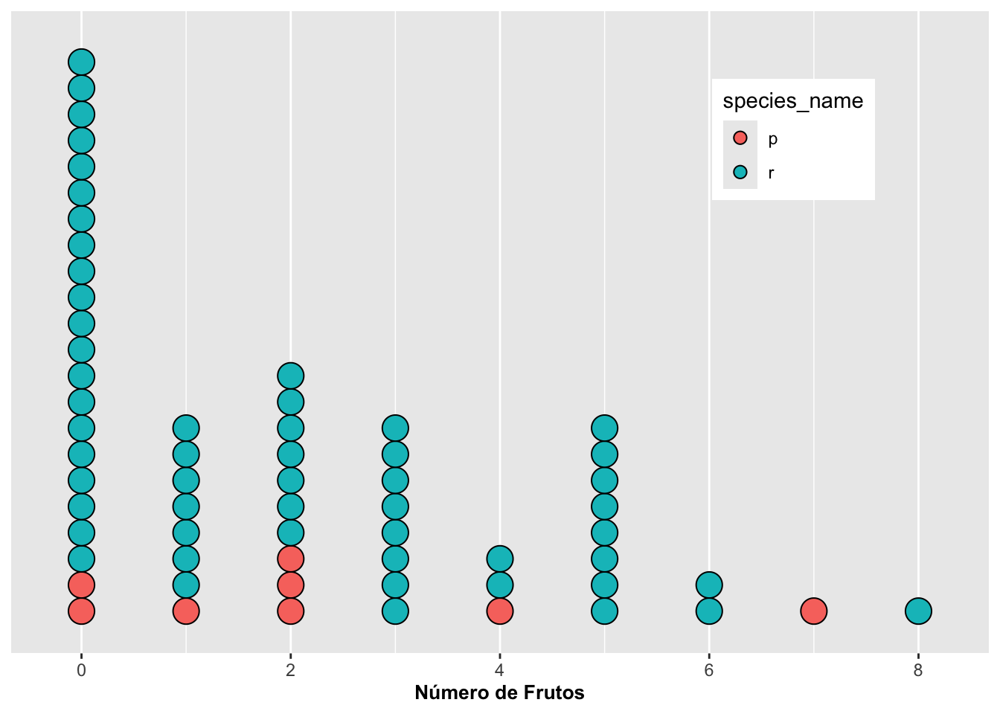
RETO FINAL (integrador)
p_reto <- ggplot(dipodium %>% drop_na(species_name),
aes(species_name, number_of_fruits, fill = species_name)) +
geom_dotplot(stackgroups = TRUE, binaxis = "y",
method = "histodot", binwidth = 0.5,
stackdir = "center", stackratio = 0.6, dotsize = 0.7) +
scale_y_continuous(NULL, breaks = NULL) +
scale_fill_brewer(palette = "Set2") +
labs(x = "Especie de orquídea", y = NULL, fill = "Especie",
title = "Distribución del número de frutos por especie (Dipodium)",
caption = "Eje Y oculto (apilamiento visual).") +
theme(legend.position = "top",
plot.title = element_text(face = "bold"))
print(p_reto)## Warning: Removed 1 row containing missing values or values outside the scale range
## (`stat_bindot()`).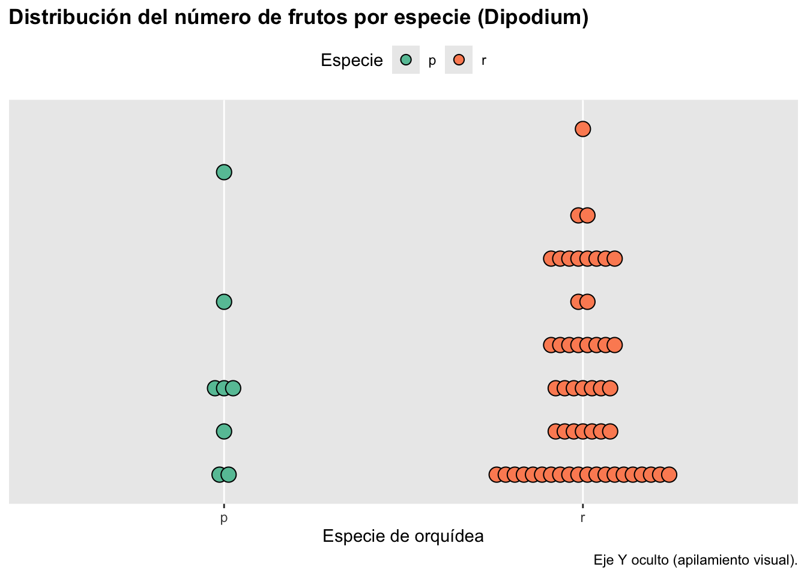
▶ Reto final
El gráfico integrador combina:
apilamiento por grupos método “histodot” para estructura clara ocultación del eje Y paletas de color informativas un título y leyenda finamente ajustados
Este tipo de gráfico funciona muy bien como figura principal en informes o artículos descriptivos.
Opciones y Parametros de geom_dotplot
A continuación se resumen las opciones y parámetros más importantes de geom_dotplot:
- ggplot(el archivo de datos, aes(la variable continua))
- geom_dotplot (x, y, alpha, color, fill, na.rm, binwidth, binaxis,
method, binposition, stackdir, stackratio, dotsize, stackgroup)
- alpha: la intensidad del color
- fill: el color de los puntos
- color: el color de la línea alrededor (en este caso alrededor de los puntos)
- na.rm: remueve los datos NA con una advertencia, el valor predeterminado es {FALSE}; si se define como {TRUE}, los remueve sin advertencia
- binwidth: el ancho de los compartimentos donde por omisión el rango es de 1/30 el rango de los datos
- binaxis: determina si se agrupa en el eje de {X} (de forma predeterminada) o en el eje de {Y}
- method: el método predeterminado es {dotdensity}, donde los {bins} estarán organizados por la densidad de los puntos; cuando es {histodot}, estarán organizados por una distancia fija de los {bins}
- binposition: cuando {method} es {dotdensity}, {bygroup} (el predeterminado) posiciona los grupos {bins} por separado; cuando el {method} es {all}, determina las posiciones de los bins con todos los datos sin tomar en cuenta los diferentes grupos a que pertenecen los datos; este último parámetro se usa cuando hay más de un grupo.
- stackdir: determina en qué dirección se apilan los puntos; para arriba es {up} (predeterminado), para abajo es {down}, para el centro es {center}, y en el centro con los puntos alineados es {centerwhole}
- stackratio: determina cuán cercano se amplían los datos; el predeterminado es 1, donde los puntos apenas se tocan; si se quieren más cercanos, se usa un número más pequeño; si se quieren más separados, se usa un número más grande
- dotsize: el tamaño de los puntos relativo al {binwidth}; el valor predeterminado es 1
- stackgroup: determina si los puntos deberían estar apilados en una variable de grupo.